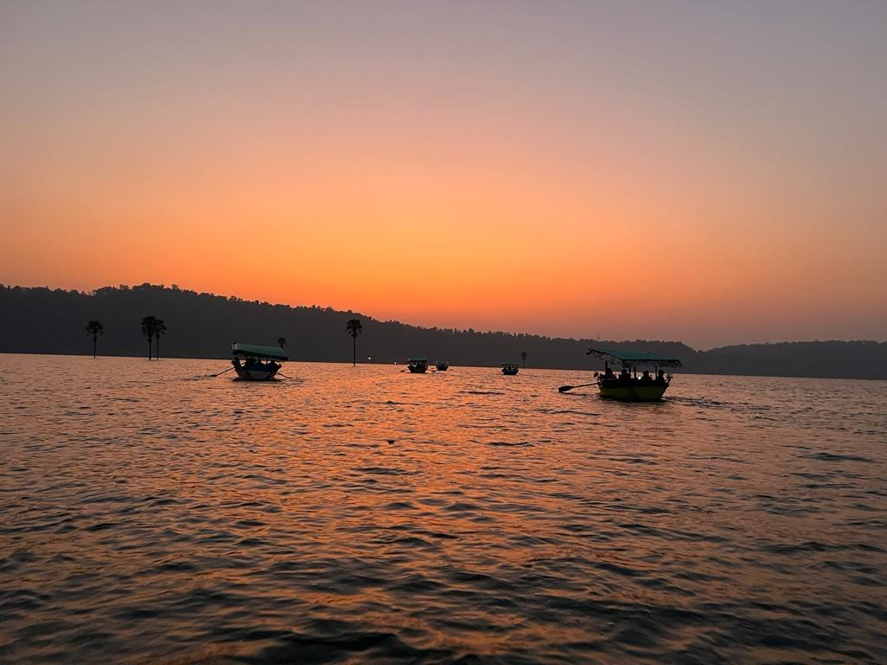
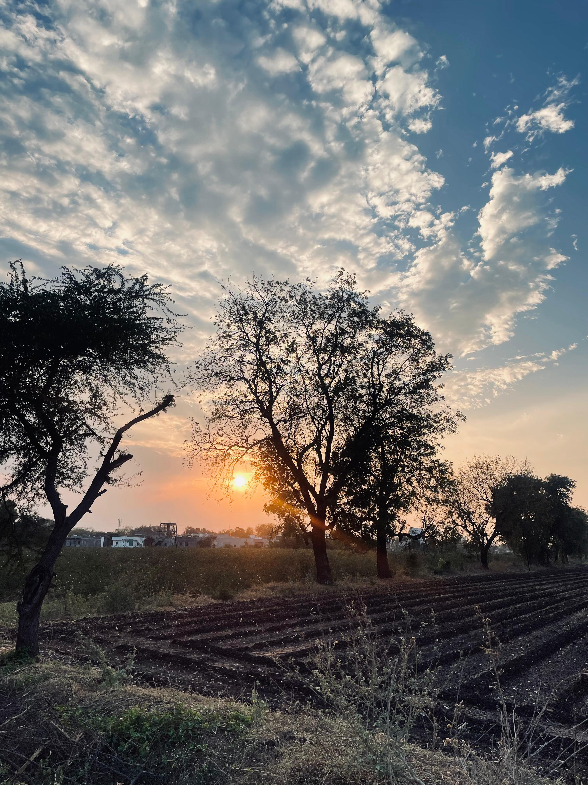
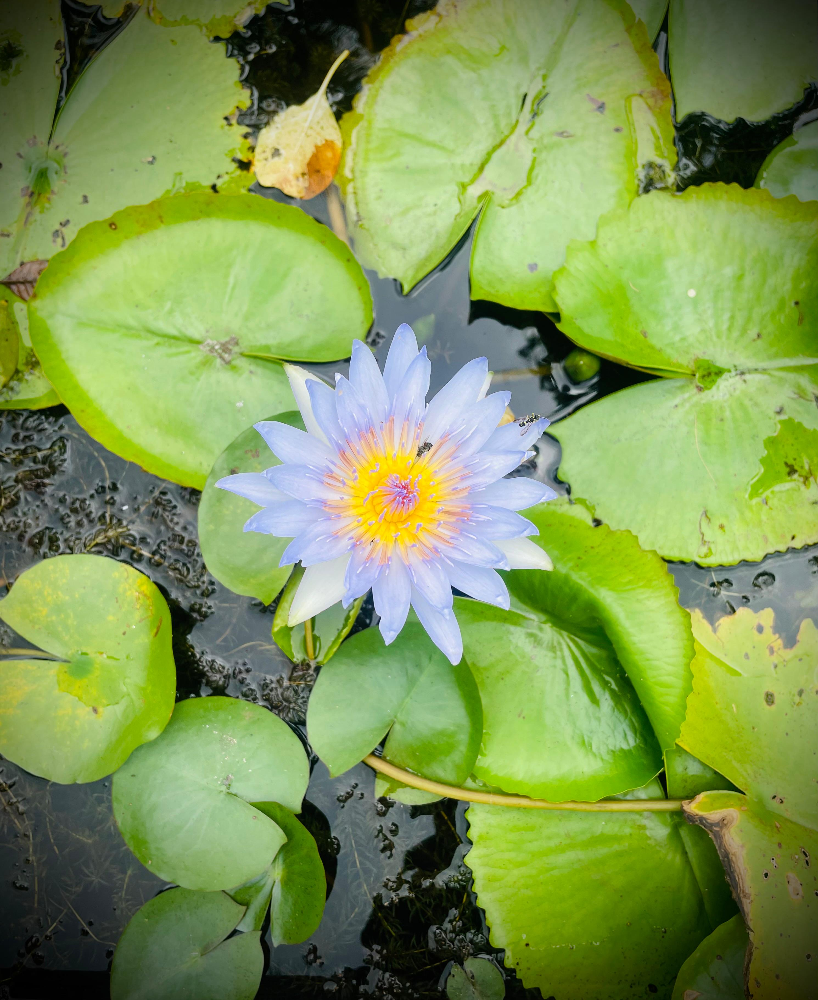
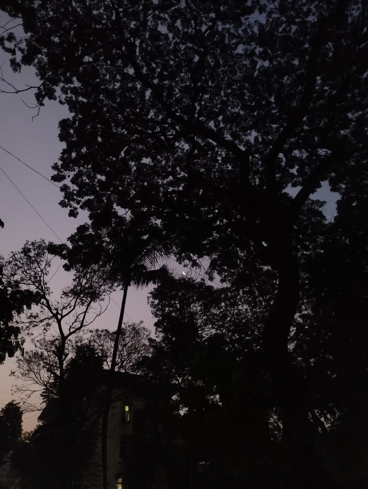
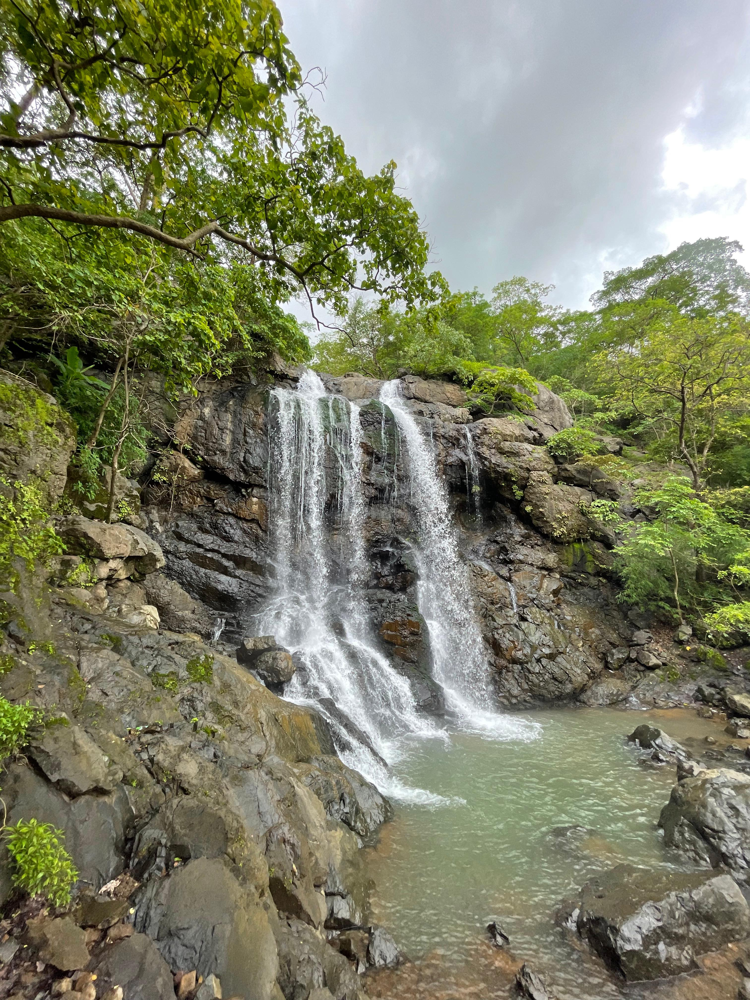
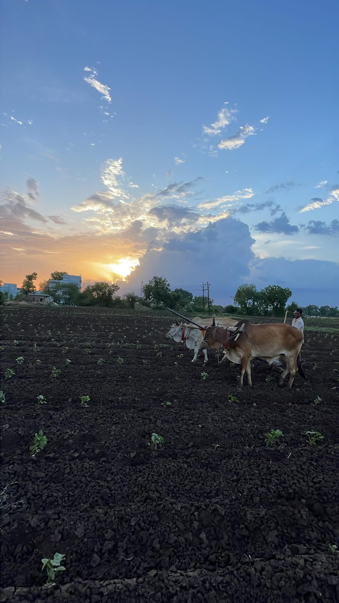

My self, Samruddhi Mhatre. I am currently pursuing BAF. I am very passionate about my career and goals. I want to be successful in life .
Along with this also like photography.
My hobby is photography, and I am extremely passionate about it. There is something truly magical about capturing moments in time and being able to freeze them forever in a photograph. I have always had an innate appreciation for beauty in the world around me and photography allows me to express that appreciation in a tangible way.
One of the main reasons why I am so passionate about photography is because it allows me to see the world from a different perspective. Through the lens of my camera, I am able to capture details and perspectives that often go unnoticed in our busy lives. I find myself constantly searching for unique angles, lighting conditions, and compositions that can transform an ordinary scene into a work of art. This hobby has taught me to view the world with a curious and observant eye, always on the lookout for the next breathtaking shot.
Additionally, photography has become a form of self-expression for me. Whenever I am behind the camera, I feel a sense of freedom to capture the world as I see it. Whether I am photographing a dramatic sunset, a bustling cityscape, or a simple flower, each image represents my unique vision and interpretation of the subject. It allows me to communicate my emotions, thoughts, and ideas through visual storytelling. Photography has become my personal voice, allowing me to share my perspective with others and invite them into my world.
Furthermore, photography has also become a means of connecting with others who share the same passion. When I am out in nature or exploring a new city, I often encounter fellow photographers who are also chasing the perfect shot. These encounters have led to countless conversations, shared experiences, and valuable friendships. I have learned so much from others in the field and have been inspired by their unique styles and approaches. Photography has the power to bring people together and create a sense of community among individuals who might otherwise never cross paths.
Lastly, photography allows me to find solace and peace amidst the chaos of everyday life. When I am behind the camera, everything else fades away, and I am fully present in the moment. Time seems to stand still as I focus on composing the perfect shot. It becomes a form of mindfulness where I am completely immersed in the act of capturing beauty. This escape from reality is rejuvenating for my mind and soul, allowing me to find inner calm and relaxation.
In conclusion, photography is my favourite hobby because it allows me to see the world through a different lens, express myself creatively, connect with others, and find solace amidst the chaos of everyday life. The passion and excitement that photography ignites within me are unparalleled. This hobby has enriched my life in countless ways, and I am incredibly grateful for the opportunity to capture and share the beauty that surrounds us.
I have shared my favourite captures over here .
|  |  |  |
|  |  |  |